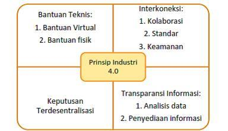

Komputer Dan Industri
Download ModuleRevolusi Industri
Kebiasaan daripada kehidupan masyarakat dan begitu cepatnya perkembangan teknologi, sehingga membuat perubahan pada gaya hidup dan cara kerja manusia membuat kehidupan digital menjadi dampak pada semua bidang disiplin ilmu, merupakan revolusi industri. Pesatnya perkembangan teknologi informasi membuat terjadinya beberapa terobosan, yakni diantaranya ialah pada bidang yang disebut dengan kecerdasan buatan, disiplin ilmu tersebut merupakah sebuah disiplin ilmu dimana teknologi yang diciptakan merupakan adopsi dari keahlian seseorang yang dituangkan ke dalam suatu aplikasi yang memudahkan proses produksi dengan otomatis.
prinsip pindustri.4.0 menurut Hermann dkk (2016)

Otomasi Industri
Merupakan revolusi yang memiliki potensi untuk mempercepat proses produksi baik secara kualitas maupun kuantitas yang dapat dikerjakan oleh mesin. Jadi dalam penggunaannya mesin akan dirasa dapat bekerja lebih cepat daripada dengan tenaga kerja manusia. Otomasi industri ini menjadi bahasan yang sangat penting dalam dunia industri, karena ini berkaitan dengan tenaga kerja. Manusia harus benar-benar memahami kondisi seperti ini, bukan berarti segala kehidupan akan diganti oleh mesin, namun manusia harus bersiap agar dapat mengendalikan mesin, agar mesin tersebut dapat bekerja dengan semestinya.
Struktur Robotika
Dimana strukturnya terdiri dari :
a. Manipulator
Penggerak badan robot seperti dapat memutar, mencapit, dan sebagainya.
b. Kontroler
Merupakan peralatan yang bertugas untuk mengendalikan alur kinerja
robot.
c. Power Daya (Power Supply)
Berguna untuk memberikan tenaga agar mesin atau robot dapat bergerak.
d. End Effector
Sebagai kelengkapan daripada kebutuhan untuk melakukan operasi
tertentu pada suatu obyek.
Manfaat Pengunaan Robot Dibidang Industri
a. Meningkatkan kualitas produk.
b. Meningkatkan management produksi.
c. Meningkatkan jumlah produksi.
d. Menghemat sumber daya.
Salah Satu Jenis Penggunaan Komputer dalam Bidang Industri
CAD (Computer Aided Design)
Merupakan komputer yang dikatakan dapat menggantikan meja
gambar sebagai alat bantu untuk menggambar. Aplikasi ini sudah
mendukung tampilan 3 dimensi. Dalam penggunaannya aplikasi ini
digunakan untuk melakukan design gambar untuk media promosi dan
sebagainya.
Komputer-Aided Manufacturing (CAM)
Jenis komputer ini digunakan untuk membantu mengoperasikan
mesin produksi dalam skala yang besar terutama dalam proses produksi
bahan mentah yang diolah hingga menghasilkan produk jadi agar
pengerjaannya menjadi lebih cepat. Biasa jenis produk ini digunakan oleh
produksi dalam skala yang sangat besar.